I’ve been quite busy working on the Civic in the past month. I’m verfy excited to shared the journey I’m embarking on, and can’t wait to see how the finished product looks.
Like every other civic / older Honda out there the wiper arms had basically all but lost their OEM paint. I wanted to fix them up so instead of buying new ones I sandblasted and powder coated mine with a nice matte black powder coat. I shouldn’t have to worry about them for quite a while. The intake tube was also coated for fun.


That same day the Civic went to it’s first meet. It probably would have wom best wiper arms in show had there been trophies.

I also made a cool change to the headliner. I didn’t want to keep it the boring light gray but didn’t want to paint it so I went in a different direction. I actually stole this from a Subaru build thread.
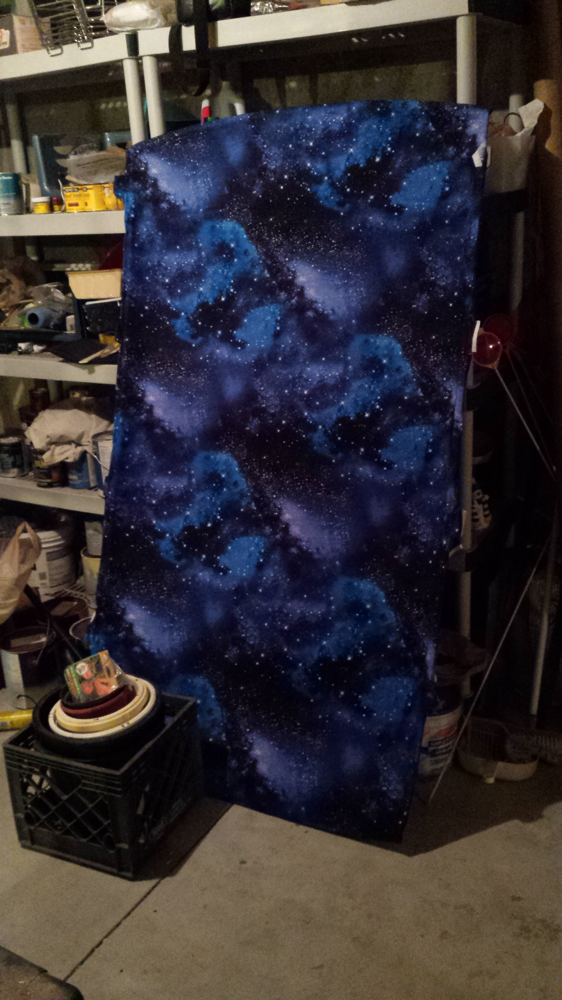
I don’t really care for the dark gray color of the Civic nor it’s beat up appearance. I decided it was time to make a serious change and have embarked on a full paint job. The driver’s door was mangled up from a minor accident so I ended up having to replace it with a “new” one.
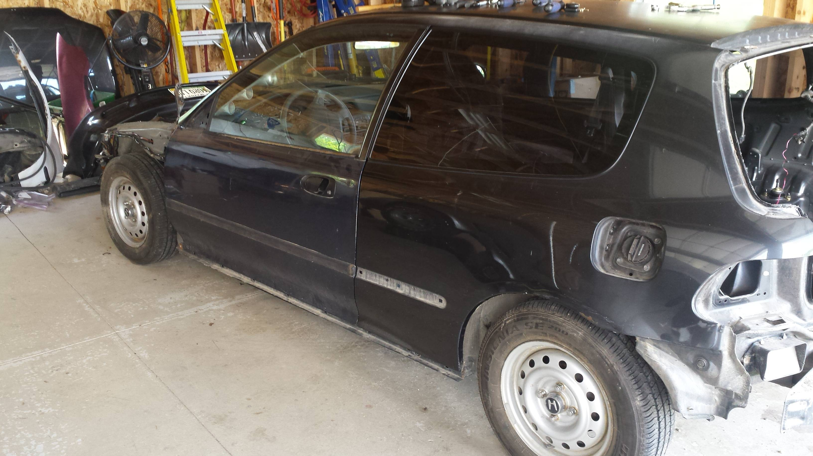
This was also the perfect time to replace the damn leaky heater core.

To strip the paint off the car I’ve been using aircraft stripper. It smells horrible but does a great job at peeling the paint right off.
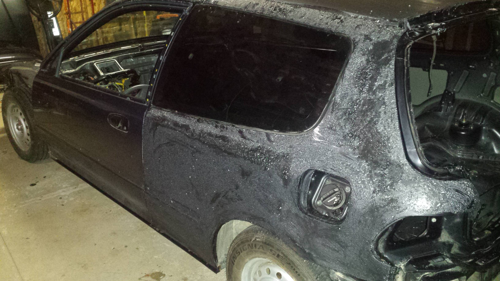


Since the car will be sitting for the winter I didn’t want to leave the bare metal exposed. A quick coat of primer fixed that.
 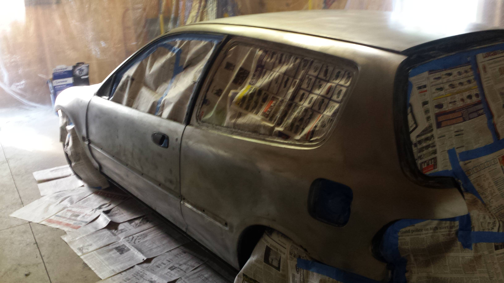
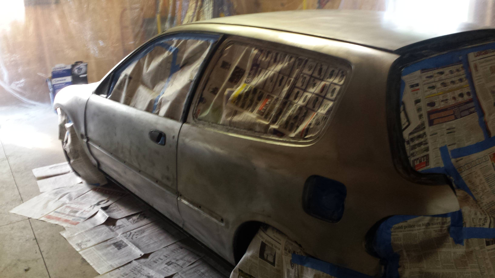
 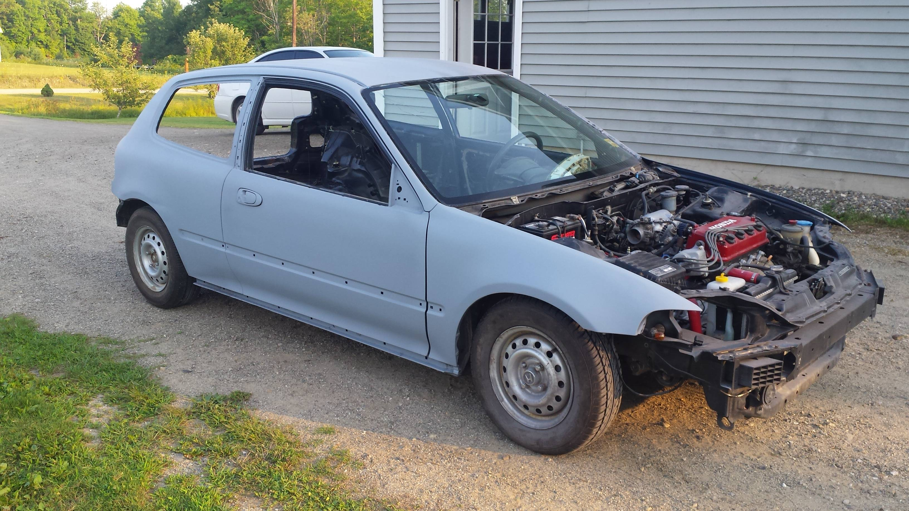
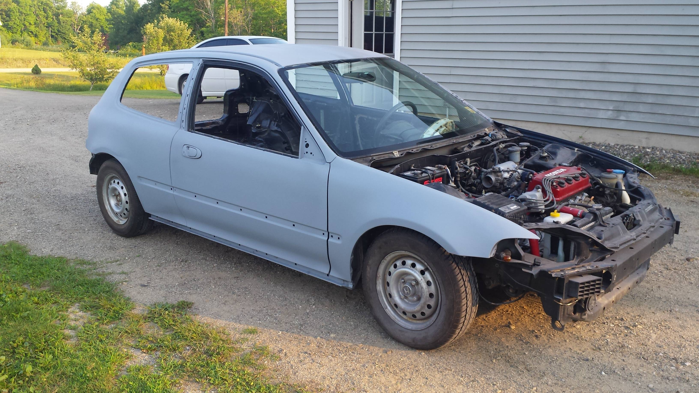
The tailgate wasn’t in horrible shape but it did have a few dents.
 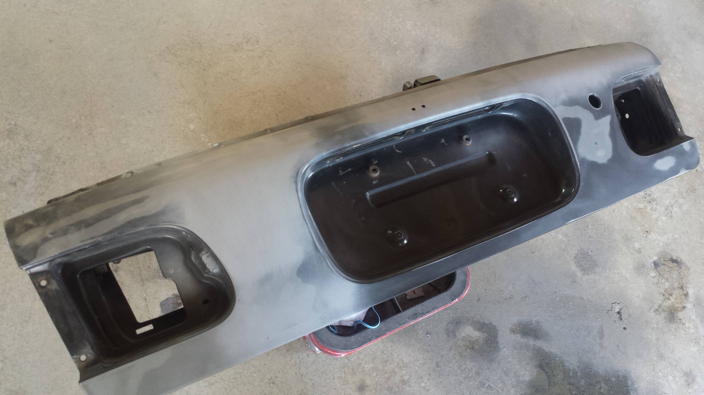
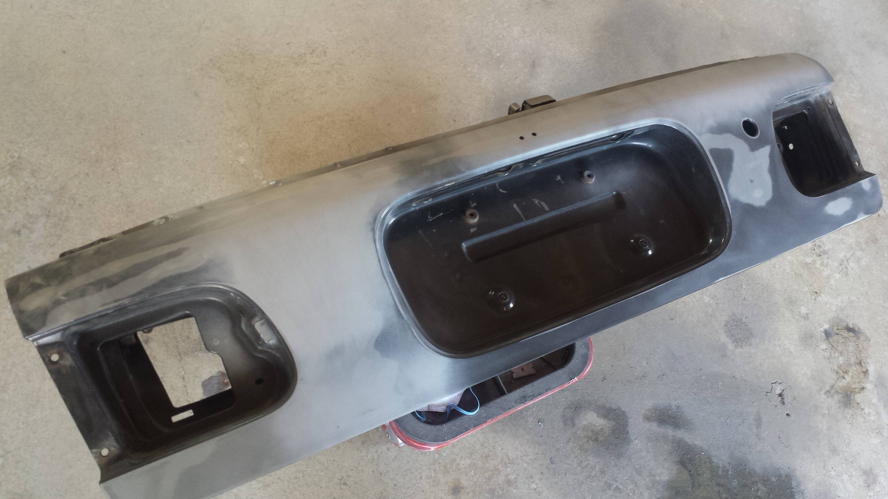
The hood on the other hand had quite a few dents. It must have been caught in a hail storm at some point.

My Dad had an interesting idea to try on the hood. I think it came out pretty decent and I like it because it’s different. He also managed to work out the huge dent in the lower right corner.
 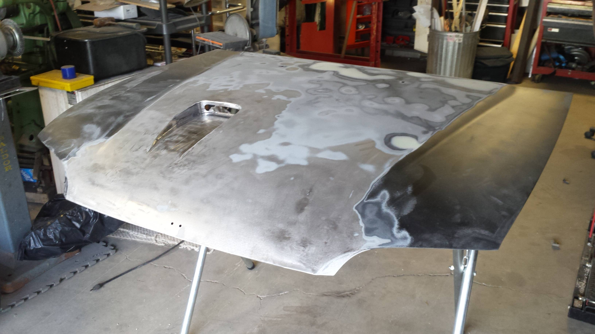
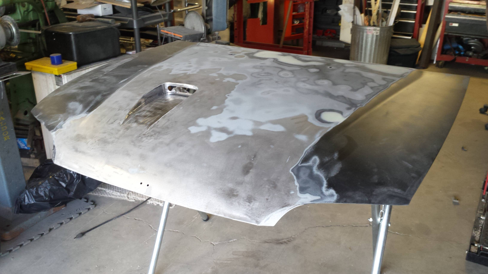
I took the time to powder coat some of the brackets from under the dash.
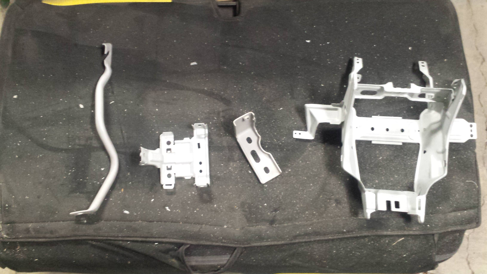

I also painted the dash to make it look like an OEM black one.
 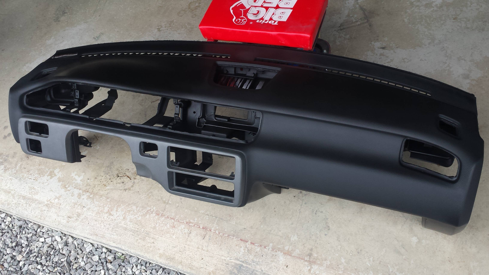
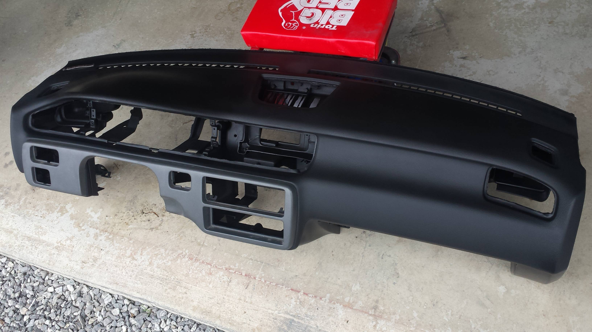
Next up I’ll be doing some cutting and welding to install these.